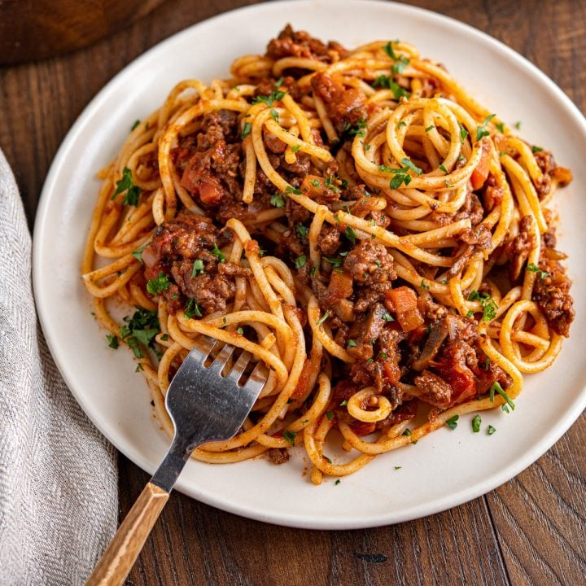

Spaghetti Bolognese

What is Spaghetti??
Spaghetti Bolognese is a classic Italian pasta dish featuring a rich and savory tomato based meat sauce, slow cooked with onions, garlic, and herbs, served over spaghetti pasta and often topped with parmesan cheese.
Ingredients
Bolognese Sauce
- 2 tbsp olive oil
- 1 onion (finely chopped)
- 2 cloves garlic (minced)
- 1 carrot (finely chopped)
- 500g minced beef (or a mix of beef and pork)
- 1 can of chopped tomatoes
- 1 tsp dried oregano
- 1 tsp dried basil
- Salt & black pepper to taste
Pasta
- 500g Spaghetti pasta
- Salt (for boiling water)
To serve
- Grated parmesan cheese
- Fresh basil or parsley (optional)
Steps to cook Spaghetti Bolognese
- Prepare the Base
- Heat olive oil in a large pan over a medium heat
- Add the chopped onion, garlic and carrot. Saute for 5 minutes until softened.
- Cook the Meat
- Add the minced meat and cook until browned, breaking it apart with a spoon.
- Add Tomatoes and Seasonings
- Stir in the chopped tomatoes, tomato paste, beef stock, oregano, basil, black pepper and salt
- Add sugar if needed to balance acidity.
- Simmer the sauce
- Reduce the heat to low and let the sauce simmer for at least 30-45 minutes, stirring occasionally. Remember, the longer it simmers, the richer the taste will be!
- Cook the Spaghetti
- Bring a large pot of salted water to a boil.
- Add the Spaghetti and cook according to package instructions (usually 8-10 minutes)
- Drain and set aside.
- Serve!
- Serve the Spaghetti with the sauce on top.
- Garnish with grated parmesan and fresh basil.
Chef Sultans Advice

"Listen friend, when cooking Spaghetti, don't just throw it into the water like you're washing socks! Remember to salt the water before you boil it! And remember, if you cook the food with love... you will love to eat the food! You understand?"
Home